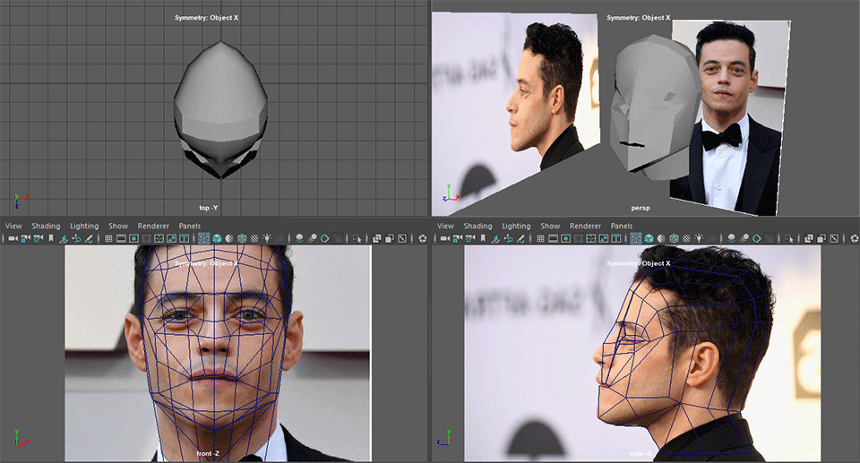

Facial Expression Study
I needed to get some practice modeling, rigging, and skinning the human face. This additionally helped my knowledge of anatomy. I chose Rami Malek as my base, as I had recently seen "No Time to Die", and his face looks nice.
Here is the animation of the face going through different emotions as well as the individual faces:


Here is the behind the scenes gif:
